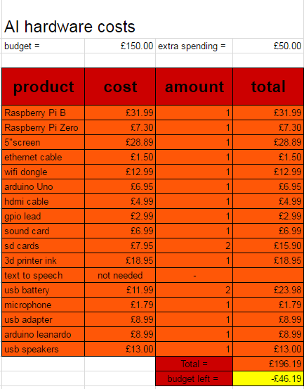

The AI started off on an Arduino Uno using an SD card. This basic Algorithm of receiveing, checking and learning was to be the basline of all future versions.
The next version was too use audio input and output. Once this was created, after alot of work, the AI was too lern through physical action using servos and potentiometers. After trying to create these gear boxes to hold the servo and potentiometer, we decided that it would be easier just to solder a wire directly to the servo pot pin. SHEP could then draw input from the servos and save.
SHEP started to get more and more complex on a series of Arduino boards using I2C communication.
There wasn't enough processing power on the Arduino for SHEPs 'brain' so the code moved onto Python.
Python worked well for SHEP.

SHEP is very costly in its designing and prototyping stage, it takes a while to get this money to spend on SHEP. In
the future we would like to make SHEP very affordable for all.
Below shows the download links to development papers on SHEP:
| Version | Download | Description |
|---|---|---|
| V1.0 | --no found download-- | Basic concept of the AI |
| V1.1 | Download | Basic concept of the AI |
| AI_2 | Download | Basic concept of the AI |
| 0.0.2 | Download | Development dairy and overview fo current version |